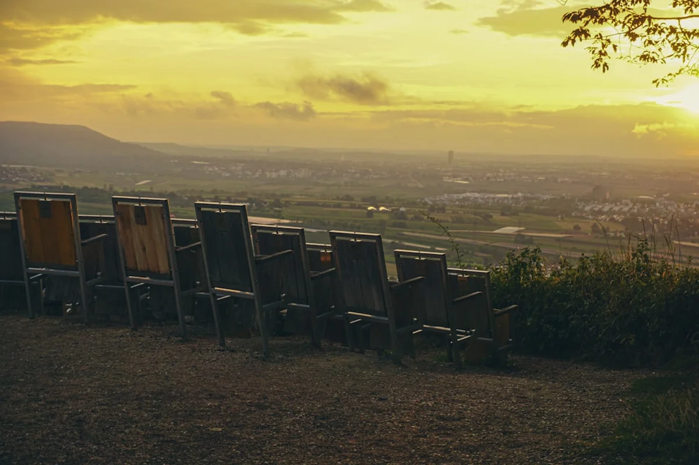
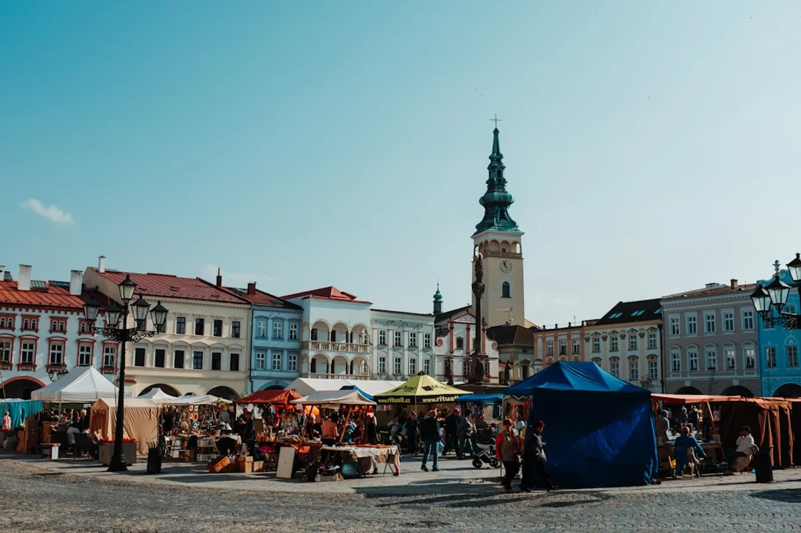

Introduction
Everyone recommends Kazimierz. The expat forums push Stare Miasto for convenience, Krowodrza for families, Nowa Huta for the brave. But living in Krakow Podgórze like a local in 2026 is something genuinely different: it is choosing the side of the Vistula that Krakow itself spent decades trying to forget, and discovering that forgetting turned out to be the best thing that ever happened to it.
Podgórze is having a moment right now, and not the manicured, Instagram-curated kind. A wave of urban renewal funds tied to Krakow's broader 2025 to 2030 metropolitan development plan has quietly accelerated infrastructure upgrades across the district without triggering the gentrification spike that Kazimierz experienced between 2015 and 2022. Rents in Podgórze's core streets around Plac Bohaterów Getta and ulica Limanowskiego are still, as of early 2026, between 20 and 30 percent below comparable Kazimierz apartments. That gap is closing, but it has not closed yet.
This guide is not a list of co-working spaces and specialty coffee shops, though those exist here too. It is a serious, street-level breakdown of what Podgórze actually feels like to live in, what nobody warns you about, and why the neighbourhood's complicated, layered history makes it one of the most psychologically rich places in Europe to call home.
The Neighbourhood Nobody Wanted (And Why That Matters)
Most expat guides treat Podgórze's history as a footnote: yes, the wartime ghetto was here, yes, Schindler's factory is here, move on to the café recommendations. That approach misses something fundamental about what it means to live in this district versus simply visiting it.
Podgórze was, until 1915, a legally separate town from Krakow. It was founded in the 1780s under Austrian rule as a deliberate economic rival to the city across the river, and its identity as an outsider, scrappy, self-reliant place never fully dissolved after annexation. Walk the residential streets behind Kopiec Krakusa on a Tuesday morning and you will find a neighbourhood that still operates on its own rhythms: corner grocery shops run by the same families for thirty years, a retired schoolteacher walking her dog at precisely 7:45 every morning, a locksmith whose handwritten price list has not changed since 2019.
This is not poverty. This is a community that simply was not demolished and rebuilt in the image of what international visitors expect Polish cities to look like. That distinction matters enormously for anyone thinking seriously about settling here. Podgórze rewards residents who want to integrate, not spectate. It will not perform itself for you the way Kazimierz sometimes does.
The Contrarian Truth About Podgórze Rents in 2026
The received wisdom is that Podgórze is "affordable." That is true but imprecise, and the imprecision can cost money if you are not careful about which part of the district you are looking at.
Podgórze is large. It runs from the riverbank at Zabłocie in the north to the forested hills around Lasek Borkowski in the south, and rental prices vary dramatically across those few kilometres. Here is a realistic breakdown for early 2026:
- Zabłocie (the "creative quarter" strip near the Cricoteka): 2,800 to 3,800 PLN per month for a one-bedroom flat. Gentrification has already arrived here and the coffee shop density proves it.
- Central Podgórze (Plac Bohaterów Getta and surrounding streets): 2,400 to 3,200 PLN for a one-bedroom. This is the sweet spot: walkable to everything, genuinely mixed community, still not tourist-saturated.
- Deeper Podgórze (Łagiewniki, Borek Fałęcki): 1,800 to 2,400 PLN, but you will need a bicycle or a willingness to use the tram network seriously. These are residential estates with almost zero expat infrastructure.
The key overlooked detail: Podgórze landlords in the central zone are disproportionately individual owners rather than property management companies. That means more negotiable terms, sometimes furnished flats with internet included, and landlords who actively prefer longer tenancies over short-term tourist lets. A 12-month contract negotiated directly often comes in 10 to 15 percent below the advertised price.
For flat hunting, Otodom remains the most comprehensive Polish property portal, but joining the Krakow Expats Facebook group for word-of-mouth leads often surfaces unlisted flats before they ever reach the portals.

Where Locals Actually Shop and Eat (The Non-Tourist Version)
The Rynek Podgórski, the district's own market square, is one of the most underwritten public spaces in any major Polish city. It is not as grand as Kraków's main Rynek Główny, which is precisely why it functions as an actual neighbourhood square rather than a tourism set piece. On Saturday mornings a small but serious farmers market appears along its northern edge, with producers from the Małopolska countryside selling seasonal vegetables, smoked cheeses from the Tatra foothills, and occasionally homemade nalewki (fruit liqueurs) of debatable legality and excellent quality.
For daily groceries, locals use Biedronka branches on ulica Wielicka and ulica Kalwaryjska, but the genuinely local shops worth knowing are the small butcher on ulica Limanowskiego (no website, cash only, extraordinary kielbasa) and a family-run warzywnik (greengrocer) near the Korona tram stop that sources from the same farm collective it has used for over a decade.
For eating out, the honest insider recommendation is to avoid the two or three restaurants directly adjacent to the Fabryka Schindlera museum, which have optimised entirely for tourist turnover. Instead:
- Bar mleczny culture is alive in Podgórze: these socialist-era milk bars offer hot Polish lunches (bigos, pierogi, żurek) for 15 to 25 PLN per plate, and the clientele is entirely local.
- Gospoda Pod Kopcem, near the Krakus Mound, draws neighbourhood regulars rather than tourists and serves the kind of slow-cooked Polish food that does not photograph particularly well and tastes extraordinary.
- The growing cluster of independent cafés around ulica Dekerta caters to the younger creative crowd without the Zabłocie price premium.
Getting Around Podgórze: The Tram Network Is Better Than You Have Been Told
One persistent expat complaint about Podgórze is that it is "disconnected" from the rest of Krakow. This is flatly wrong and worth correcting directly. The district is served by multiple tram lines running along its two main arteries, ulica Wielicka and ulica Kalwaryjska, with connections to the main train station (Kraków Główny) achievable in under 20 minutes on the number 3, 9, or 24 tram.
The 2025 completion of the new tram extension toward Swoszowice has also quietly improved connectivity into the deeper residential southern zones that previously felt genuinely isolated. A monthly public transport pass in Krakow costs 162 PLN as of January 2026, covering unlimited travel across trams and buses, which makes car ownership in this neighbourhood entirely optional for most residents.
The one genuine transport gap: east-west movement within Podgórze itself, between Zabłocie and the Krakus Mound area for example, is awkward by tram and requires either a bicycle or patience. The city's Wavelo bike-share system has stations throughout the district and is the local solution of choice for this specific problem. Annual membership costs 30 PLN and covers 20-minute free rides, which covers most intra-Podgórze journeys comfortably.

The Psychological Weight of Living Here (The Part No Relocation Guide Mentions)
There is something no expat forum thread, no relocation consultant, and no neighbourhood ranking website will tell you about living in Podgórze: the weight of what happened here is present in daily life in a way that is neither oppressive nor ignorable. It is simply there.
The Apteka Pod Orłem (Eagle Pharmacy) is not a museum you visit and then leave behind. It is on a square where people walk their dogs, where teenagers sit on the memorial chairs on a Friday evening, where someone is always setting up a bike lock or arguing on the phone. The Historical Museum of Krakow complex, which includes the Schindler Factory, is not at the edge of the neighbourhood: it is woven into it.
Expats who have lived in Podgórze for more than six months consistently report that this proximity to profound historical memory changes how they experience ordinary things. A walk to buy bread passes a plaque. A favourite café sits in a building that was something else, entirely, eighty years ago. This is not trauma tourism: it is the specific condition of living in a place where the past has not been aesthetically managed into comfortable distance.
For many people, this turns out to be a feature rather than a problem. It produces a quality of attentiveness, a habit of noticing, that expats who later move to more frictionlessly pleasant neighbourhoods report missing. Whether that resonates or unsettles depends entirely on who you are. It is worth sitting with that question honestly before signing a lease here.
Practical Numbers: What a Month in Podgórze Actually Costs in 2026
For a single expat renting a one-bedroom flat in central Podgórze and living at a comfortable but not extravagant standard, a realistic monthly budget in early 2026 looks approximately like this:
- Rent (one-bedroom, central Podgórze): 2,600 to 3,000 PLN
- Utilities (gas, electricity, water, building charges): 400 to 600 PLN depending on season and building age. Pre-1990 buildings can be significantly more expensive to heat.
- Internet (standard fibre connection): 50 to 80 PLN via providers like Orange or Vectra
- Monthly transport pass: 162 PLN
- Groceries (cooking at home regularly): 700 to 1,000 PLN
- Eating out 2 to 3 times per week at local restaurants: 400 to 600 PLN
- Coffee culture (cafés, occasional coworking day passes): 200 to 350 PLN
- Health insurance (EU citizens using EKUZ card may skip private cover initially, non-EU expats should budget for private plans): 150 to 300 PLN for a basic private plan
Realistic total: 4,700 to 6,000 PLN per month, or approximately 1,100 to 1,400 euros at current exchange rates. For context, that is broadly comparable to a modest lifestyle in Porto or Valencia but with a significantly more central location relative to neighbourhood amenities.
One often-overlooked cost: older Podgórze buildings frequently lack adequate insulation. Budget for a good set of thermal curtains and possibly a supplementary electric heater for the coldest weeks of January and February, which regularly see temperatures below minus 10 degrees Celsius.
The Emerging Scene: What Is Actually New in Podgórze Right Now
The first months of 2026 have brought a small but meaningful cluster of new openings that reflect where Podgórze is heading without yet crossing into the over-development that has dimmed the appeal of parts of Kazimierz.
Cricoteka, the remarkable museum and archive dedicated to theatre director Tadeusz Kantor, continues to host genuinely adventurous programming that draws a mixed Polish and international crowd without trying to appeal to everyone. Its riverside terrace in warmer months is one of the best-kept open secrets for an afternoon spent reading.
The Zabłocie end of the district is developing a quiet reputation for independent design studios and small-scale production workshops, a light-industrial creative layer that is reminiscent of what Kreuzberg in Berlin looked like in the early 2000s before the comparison becomes too flattering. Several of these studios run open-door days on the last Saturday of each month.
On the food side, a notable shift has been the arrival of genuinely good Vietnamese and Georgian restaurants serving the resident community rather than tourists, with price points that confirm they are not positioning themselves as destination dining. The significant Ukrainian community that has settled in Krakow since 2022 has also produced a layer of Ukrainian bakeries and delis across Podgórze that are outstanding and almost entirely unreviewed in English-language media.
Final Thoughts
Living in Krakow Podgórze like a local in 2026 is not the path of least resistance, and that is precisely the point. It requires a genuine willingness to engage with a neighbourhood that has its own tempo, its own memory, and its own idea of who belongs here that has nothing to do with whether you arrived with a remote work contract or a guidebook recommendation.
What Podgórze offers in return is rarer than affordable rent, though it offers that too. It offers the experience of living in a place that is still in the process of deciding what it wants to become, where your presence as a newcomer is noticed without being commodified, and where the fabric of daily life has not yet been smoothed into something purely consumable.
The window to settle here before the pricing catches up with the reputation is real but not indefinite. The infrastructure investment is visible, the creative migration is happening, and the rental market has already moved from "secret" to "known." The question is not whether Podgórze will change further; it will. The question is whether you would rather arrive before or after that change is complete.
If this guide helped clarify your thinking, share it with someone else weighing up where to land in Krakow. The more people who arrive in Podgórze with accurate expectations rather than recycled myths, the better it is for everyone already living there.
Frequently Asked Questions
Is Podgórze safe to live in?
Yes. Podgórze has no significant crime problem and is considered safe for residents including solo women and families. Like any urban neighbourhood, common sense applies in quieter industrial areas of Zabłocie late at night, but the central residential zones around Plac Bohaterów Getta and Rynek Podgórski are calm and well-lit. Polish cities generally have very low violent crime rates compared to Western European equivalents.
How far is Podgórze from Krakow city centre?
The heart of Podgórze, around Plac Bohaterów Getta, is approximately 2 kilometres from the Krakow main market square (Rynek Główny). By tram it takes 10 to 15 minutes; by bicycle along the Vistula riverside path it takes around 12 minutes; on foot it is a pleasant 25-minute walk across the bridge. Connectivity is genuinely good and the perceived distance is larger than the actual distance.
Is Podgórze good for families with children?
Podgórze is increasingly viable for families. The district has several well-regarded Polish public schools, access to parks and the Vistula riverside, and a calmer daily atmosphere than the tourist-heavy centre. International and bilingual schooling options are more limited than in Krowodrza or near the Krakow AGH university area, so families requiring English-medium education should research this specifically. The Zabłocie end of Podgórze is more oriented toward young professionals without children.
Do I need to speak Polish to live in Podgórze?
Not absolutely, but more than in Kazimierz or the old town. Podgórze's local shops, butchers, greengrocers, and administration offices operate primarily in Polish, and local landlords frequently have limited English. Basic Polish functional language (greetings, numbers, shopping vocabulary) makes daily life significantly easier and is received extremely warmly by long-term residents. Apps like Duolingo cover Polish basics, and the Krakow-based language school Glossa offers short intensive courses for new arrivals.
What is the best street to live on in Podgórze for expats?
Ulica Limanowskiego and the streets immediately parallel to it in central Podgórze offer the best balance: walkable to the Rynek Podgórski, tram-connected, mixed residential character without being tourist-facing. Ulica Dekerta is good for younger expats who want café proximity. Avoid committing to the far southern areas of Łagiewniki or Borek Fałęcki without first testing the tram commute at peak hours; the distance is manageable but the neighbourhood has almost no English-language social infrastructure.